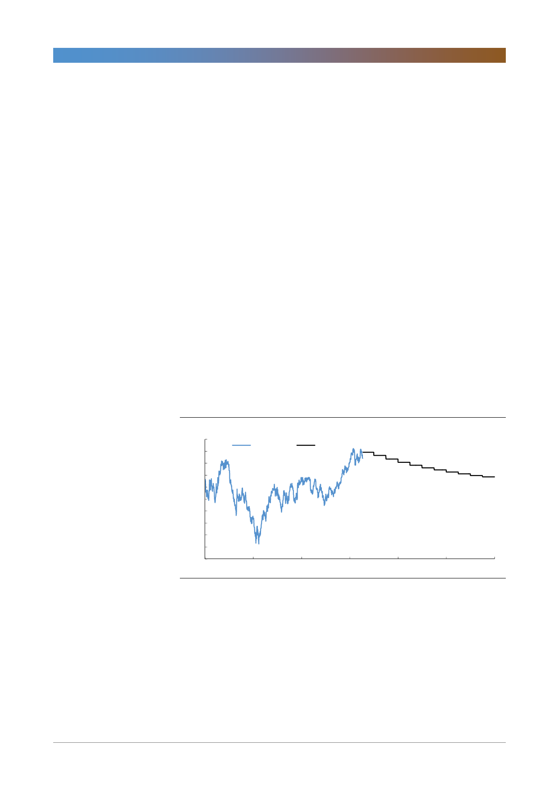

롯데케미칼(011170)
미진한 수요
2016~2017년 초반 중국에서 활발했던 투기적 거래를 목격한 이후, 우리는 수요
가 더 늘어날 것으로 예상했다. 그러나 2011년 하반기~2014년 두드러지게 나타
난 재고 비축 양상이 다운스트림 부문에서 재현될 것으로 보인다. 당장 필요한 소
량의 재고만을 보유게 되는 것이다. 공격적인 재고 비축 가능성이 낮다고 보는 이
유는 다음과 같다.
첫째, 중국의 환경 관련 규제 강화로 인한 PE 등 범용 석유화학제품시장의 병목
현상이다. 중국의 후방 산업 및 범용(bulk, commodity) 석유화학제품 전방산업
업체 대부분은 이미 관련 기준을 충족시키기 위한 대책을 도입했다. 그러나 공급
체인의 가장 마지막 단계에 있는 플라스틱 변환 및 가공 업체는 대부분 규모가
작은 영세업체로 친환경 대책이 미흡하다. ICIS 뉴스에 따르면 강화된 환경 정책
의 영향으로 2017년 말 중국의 최종 가공업체 가운데 40%가 가동을 중단했다.
중국의 최종 수요자가 감소하면서 투기적 거래가 재고를 비축할 유인이 자연스럽
게 줄어든다.
둘째, 투기적 거래는 대개 미래 가격 상승을 기대할 수 있을 때 더욱 활발히 이루
어진다. 그러나 현재 원유 선물 곡선은 백워데이션 상태로 차익 실현 기회를 기대
하기 어렵다. 원유 가격은 석유화학제품 가격을 결정하는 주요 요인이다.
[그림 1] 선물 백워데이션: 재고 비축 유인 약화
(달러/배럴)
70
65
WTI spot
60
55
50
45
40
35
30
25
20
Jan-15
Jan-16
WTI 선물
Jan-17
Jan-18
자료: Bloomberg, 한국투자증권
Jan-19
Jan-20
셋째, 모든 주요 다운스트림 제품 마진은 이미 손익분기점 (BEP) 수준이거나 그
이하로 하락했다. 2015년 이후, 에틸렌 스프레드가 톤당 800달러로 상승할 때마
다 에틸렌 유도품 마진은 수익을 기대할 수 없는 수준으로 하락했다. 이는 증가한
원재료(feedstock) 부담을 전가할 만큼 충분한 최종 수요가 존재하지 않는다는
뜻이다.
2